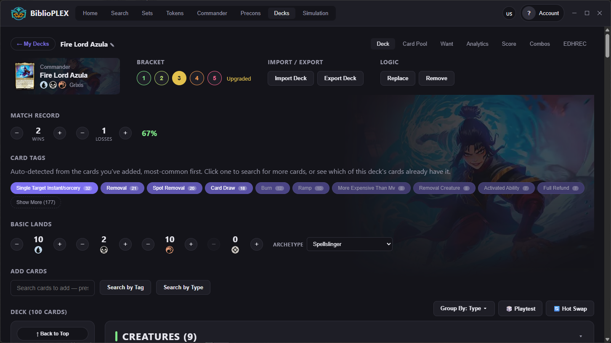
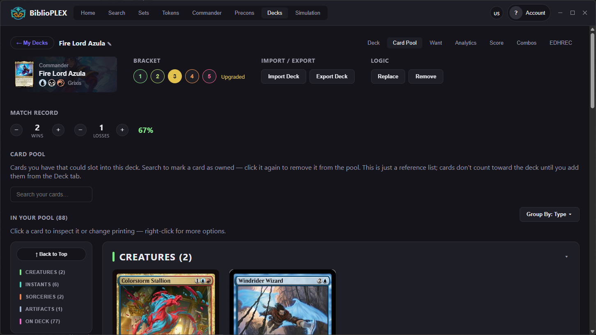
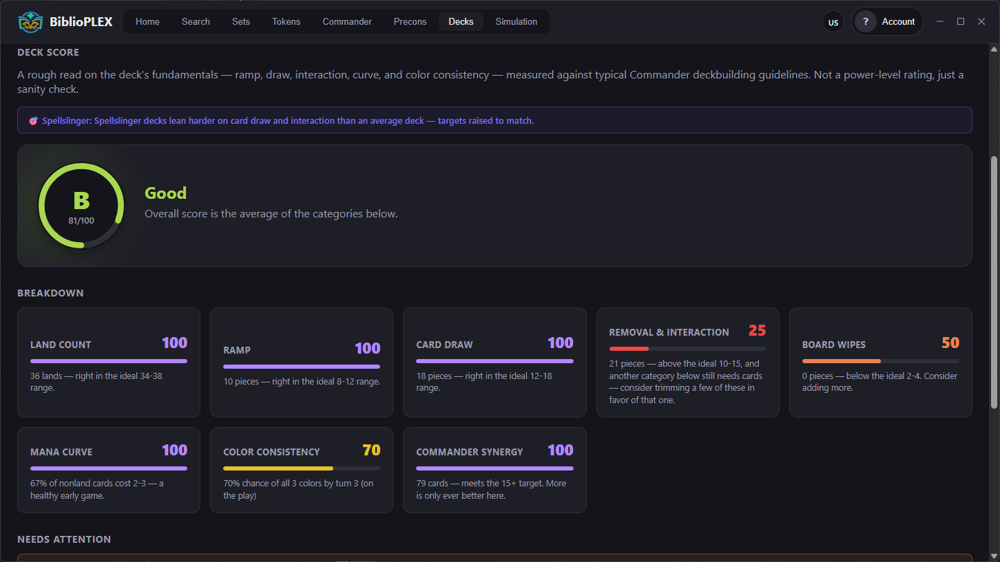
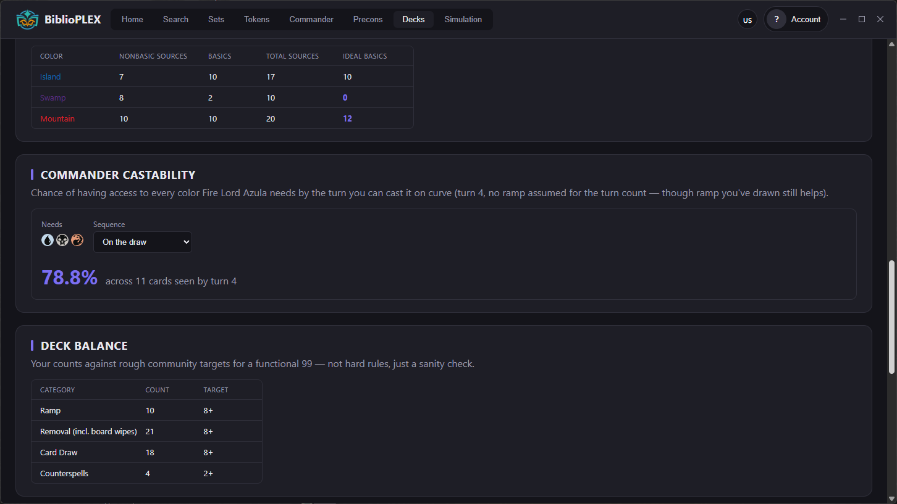
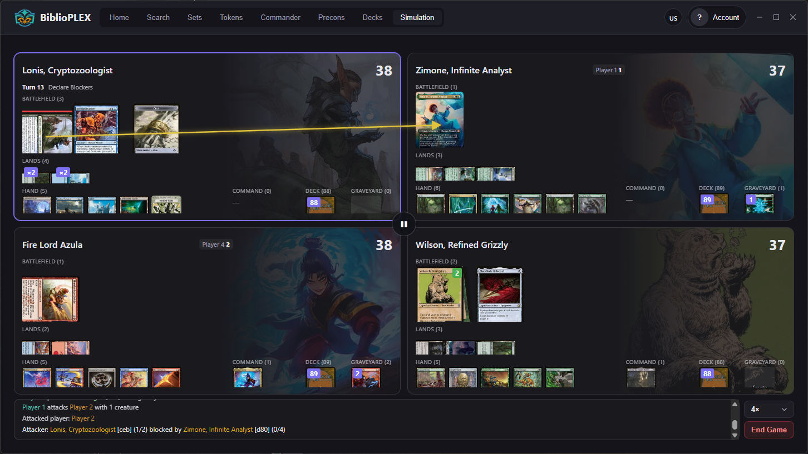
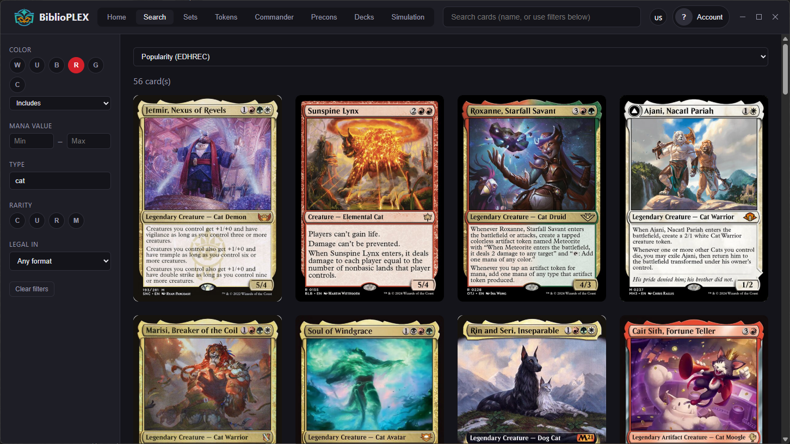
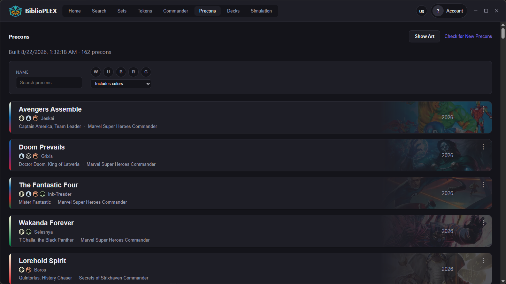

A free open source deck builder companion, now and forever.
A Windows desktop app for Magic: The Gathering — card search, Commander deck building with EDHREC recommendations, and a rules-accurate playtest engine. Made by Martyris.
.exe · no installer, no admin rights · MIT licensed
Singleton is enforced, Partner and Background second commanders are handled properly, and the Commander Bracket (1–5) is tracked on the deck itself. Drag to reorder, then regroup the whole list by type, color, mana cost, subtype or set — whichever view you happen to be thinking in.
Around the deck sit a Card Pool and a Want list for cards you're considering but haven't committed to, and Hot Swap for trying a substitution without losing your place.



Deck Score measures ramp, draw, removal, board wipes, curve and color consistency against typical Commander guidelines — and shifts those targets by archetype, so a Spellslinger deck isn't judged against a creature deck's numbers. Each category tells you the actual count and the range it's aiming for.
Analytics breaks down the mana curve and color consistency, and Commander Spellbook combo detection flags the combos already sitting in your list — including the ones you didn't put there on purpose.
Two modes. A lightweight goldfish sandbox — shuffle, draw, move things around a freeform battlefield — for checking whether the opening hands feel right.
And a full four-player bot-vs-bot simulator running on the open-source XMage rules engine, so the games actually resolve by the rules: priority, the stack, combat, triggers. Set it to 4× and watch a pod play itself out, with a full log of what happened.
The simulator works, but the bot is a long way from a good pilot. It plays a fair curve-out reasonably well and misplays anything that needs a plan — combo decks and decks that live or die on tight sequencing in particular. Treat the results as a rough goldfish, not an evaluation of the deck.


The full Scryfall database, by structured filter (color, type, mana value, rarity, legality) or free text — and any type or subtype on a card is clickable straight from its inspect view.
Search the whole card pool by Scryfall Tagger's real community tags — spot removal, ramp, sacrifice outlet — rather than guessing at oracle text.

Commander recommendations and the real Top Commanders ranking, plus a precon library resolved to exact historical decklists.
Every part of BiblioPLEX — the Scryfall search layer, the deck editor, the scoring model, the EDHREC and Commander Spellbook integrations, the XMage simulation harness — was written over several weeks of working with Claude Code, Anthropic's agentic coding tool.
The scope of the project was decided by what one person cares about. How much of it got finished was decided by working alongside an agent, day after day, until it held up. The whole repository is public, so the result is there to read either way.
That's not a disclaimer at the bottom of the page. It's the reason a single hobbyist could ship a desktop app with a rules-accurate game engine in it at all. But it wasn't a prompt and a finished app — it was weeks of sitting with the thing: describing what Commander players actually need, reading what came back, and rejecting a lot of it. Then testing. Deck after deck, simulated game after simulated game, hunting the cases where the scoring lied or the engine mis-resolved a trigger, and going back in to fix them.
Read the source on GitHubThe Windows build is portable: one .exe, no installer, no admin rights, nothing written outside its own folder. Put it wherever you like and double-click it. To remove it, delete the file.
Because it's unsigned, Windows SmartScreen will likely warn you the first time — that's expected for a small free project. If you'd rather not take an unsigned binary on trust, the source is public and builds from a clone.
Open an issue on GitHub — a screenshot and what you were doing is plenty. Feature requests and pull requests are welcome too; it's MIT licensed and there's a lot of Magic to cover.
Open an issueBiblioPLEX is unofficial Fan Content permitted under the Fan Content Policy. Not approved/endorsed by Wizards. Portions of the materials used are property of Wizards of the Coast. ©Wizards of the Coast LLC.